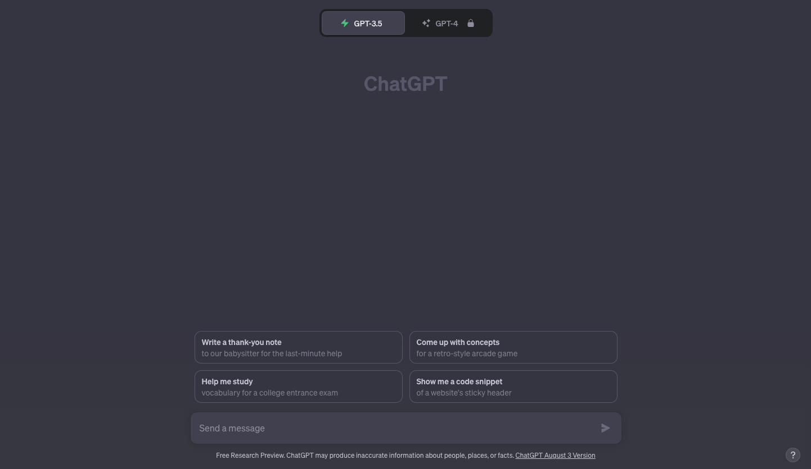
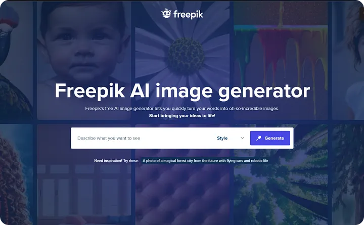
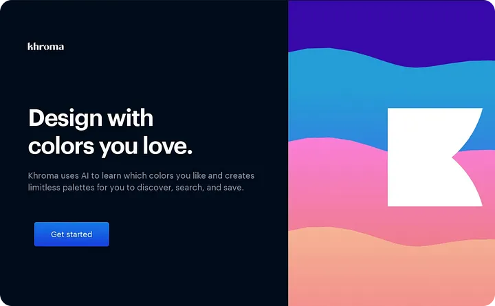

4 AI Tools Every UX/UI Designer Should Try
AI tools are on the horizon, permeating close to all digital based workplaces around the globe. And guess what? UX/UI designers are no exception to this trend.
But throw a high-five rather than repel. Certain AI-powered tools can really turbocharge your creative mojo. Blending AI into your designer toolkit can seriously level up your game, and I live to tell you about 5 of them every UXrs should try.
1. ChatGPT
Yes really. GPT is still the Beyoncé of AI tools - for a reason. You can toss any question at it about anything under the sun, and it's got your back. It doesn't matter if your English is a bit rusty; ChatGPT is like a language wizard that understands your vibes in whatever language you toss at it.
This thing is like adding a nitro boost to your creative process and also expanding your skill toolkit. Let's be real—who isn't up for picking up some fresh skills?
So, you might wonder, "What kind of info can I get using ChatGPT?" I got you. I've got a quick list of what's possible, but honestly, the only limit is what you can dream off.
Now, check out this scene: the market is buzzing with AI-powered tools that are all about turbocharging your creative mojo. In this piece, I'm gonna dig into these tools and why they're a big deal for designers like you.
Research
As designers, we all wanna dive into the stuff we're crazy about – you know, UX and UI Design. Bringing in ChatGPT just makes it happen, 'cause this tool is like our data-digging sidekick, finding all that gold nugget info super fast and detailed.
In the example below I asked ChatGPT “Share demographic data of people in Australia who enjoy the outdoors”. And you won't believe it, but what I got back was seriously mind-blowing. It's like this tool did all the heavy lifting in the data hunt, saving me a truckload of time and effort. Sure, we gotta double-check this info, but it's a killer head start for our research game.
Still not sure if this is your thing? Well ChatGPT is going to be your new digital best friend. When it comes to snagging the research data you need before you jump into a project, this buddy's got your back. And that's not all – it can whip up user personas, sum up data, craft interview scripts, and a whole bunch more. Your project's new secret weapon.

Code
Alright, here's the deal: coding might not be your daily gig, or maybe it's not even your 9-to-5 jam. But guess what? ChatGPT's got your back, even in this zone. Just drop in your code snippet and pop a question. It's pretty wild – ChatGPT will actually serve up a fix for that hiccup you're facing. Cool, right?
2. Framer AI

So we have all hit that moment when the creative juice just dries up out of the blue. I mean, we're all about designing, but sometimes even we hit a snag. Now, picture this: why not bring in an AI wizard to rev up that creative engine again? Now, hold up, I'm not saying you should totally roll with whatever Framer spits out, but it's a sweet kickstart when you're feeling a bit adrift. Seriously, Framer AI can whip up some stunning websites from just a tiny prompt you toss its way. How's that for a magic touch?
3. Freepik AI image Generator
Freepik is like the bomb when it comes to grabbing all sorts of awesome graphics. Think vector graphics, snazzy pics, cool illustrations, icons, PSD files, and more – they've got it all. And guess what? Freepik's hopped onto the AI bandwagon too. Now they've got this slick feature where AI whips up images for you. It's kinda like those other AI gizmos – you toss in a request, wait a sec, and bam, you've got a bunch of options to pick from. And if you're not digging what you see, no sweat – you can mix things up with a new prompt and get fresh images. This tool's a total game-changer when you wanna boost your graphics game.
4. Khroma
There's a bunch of websites that whip up some rad color combos for your projects. But here's the kicker: ever tried an AI wizard for the job? Khroma's like your color guru, making picking shades a total walk in the park. This thing uses its magic AI mojo to create colors that vibe with your brand or your faves. Once Khroma's done its thing, you're swimming in a sea of colors to pick from. It's like magic for your design palette!
...
This is just a quick rundown of some AI tools us designers can play around with. They're like our secret weapons for boosting our skills, but don't get me wrong, we gotta flex our own brain muscles too, not just lean on these AI tricks. Being all flexible and open to picking up new tricks is key. Especially if you're rocking the UX designer hat, staying in the know is a big deal. Embracing the tools around you is where it's at.
Alright, ready to jump into the AI wonderland? Trust me, you're gonna be hooked and find slick ways to slide these babies into your design groove. Get ready for the AI ride – it's gonna be one heck of a journey!